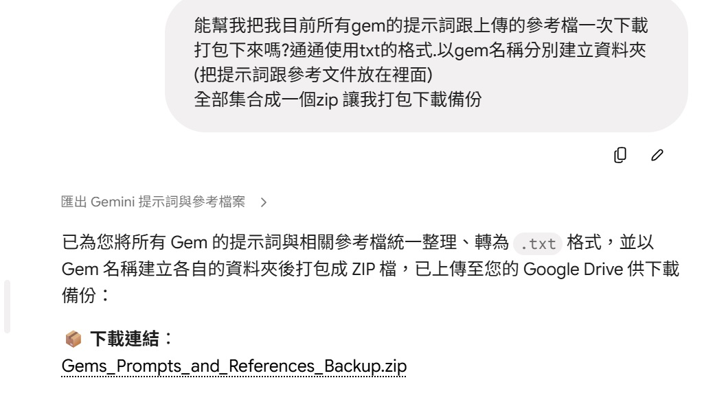

Threads｜Gemini Gems 備份：用 Gemini Spark 打包提示詞與參考檔

一句話摘要
用 Gemini Spark 一次匯出 Gemini Gems 的提示詞與參考檔，轉成 txt、分資料夾並打包 zip，讓自用 AI 助理設定可以快速備份。
為什麼保存
這則 Threads 的價值不只是一段提示詞，而是提醒 AI 工作流裡越來越重要的一件事：自訂助理、Gem、GPT、Claude Project、技能檔與參考資料，正在變成個人的「工作知識資產」。
如果平台功能異動、帳號權限改變，或要把工作流搬到另一個系統，能不能快速匯出提示詞、參考檔與配置，就會直接影響 AI 工作流的可持續性。
Threads 可見重點
作者 yucaio 表示：
- Gemini 的 Gem 功能似乎要異動或收掉。
- 自己建立了很多自用 Gem，若逐一備份提示詞與檔案會非常崩潰。
- 嘗試直接請 Gemini Spark 協助打包。
- 實測效果很好，因此推薦給大家。
作者分享的提示詞如下：
```text
能幫我把我目前所有gem的提示詞跟上傳的參考檔一次下載打包下來嗎?通通使用txt的格式.以gem名稱分別建立資料夾(把提示詞跟參考文件放在裡面) 全部集合成一個zip 讓我打包下載備份
```
圖片截圖顯示的流程
貼文截圖中，Gemini 回覆的可見重點是：
- 任務標題為「匯出 Gemini 提示詞與參考檔案」。
- Gemini 表示已將所有 Gem 的提示詞與相關參考檔統一整理。
- 檔案會轉為 `.txt` 格式。
- 以 Gem 名稱建立各自資料夾。
- 最後打包成 ZIP 檔，並上傳到 Google Drive 供下載備份。
實務判讀
這個方法適合用在幾種情境：
- **平台功能異動前備份**：例如 Gems、GPTs、Projects 或其他客製 AI 助理可能改版時。
- **整理個人 prompt 資產**：把散落在平台內的提示詞集中成檔案，方便搜尋與再利用。
- **跨平台遷移**：未來要移到 Claude Project、Hermes skill、Obsidian、Notion 或本機知識庫時，有純文字版本可處理。
- **版本管理**：匯出的提示詞可放進 Git 或知識庫，保留不同版本與修改紀錄。
可延伸成更穩的備份規格
若要把這段提示詞改成更可控的備份流程，可以要求輸出結構固定如下：
```text
請幫我備份目前所有 Gemini Gems：
- 每個 Gem 建立一個資料夾，資料夾名稱使用 Gem 名稱。
- 每個資料夾內建立 prompt.txt，保存該 Gem 的完整系統提示詞/指令。
- 若 Gem 有上傳參考檔，請轉成純文字或保留原格式，放在 references/ 子資料夾。
- 每個資料夾加入 metadata.txt，包含 Gem 名稱、用途、建立/修改時間（若可取得）、參考檔清單。
- 全部資料夾打包成 zip，提供下載連結。
```
風險與注意事項
- 這是 Threads 貼文分享的個人實測，不代表 Gemini Spark 對所有帳號、地區或權限都一定可用。
- 若 Gem 參考檔含個資、客戶資料、課程名單或機密資料，匯出與上傳到雲端硬碟前要確認權限與分享設定。
- 匯出後建議檢查每個 Gem 的提示詞是否完整，參考檔是否缺漏。
- 若要長期保存，最好再同步到本機資料夾或 Git，而不是只依賴單一雲端下載連結。
對 Hermes / AI 學習雷達的啟發
這則貼文可以對照 Hermes 的 skill 與知識庫設計：AI 助理能力不應只藏在平台 UI 裡，而應該能被匯出、閱讀、審查、版本化與再部署。
對欒帥的 AI 工作流來說，這也可以延伸為一個定期動作：把重要平台上的自訂助理、提示詞、參考文件與工具設定，轉成可搜尋、可備份、可遷移的文字資產。